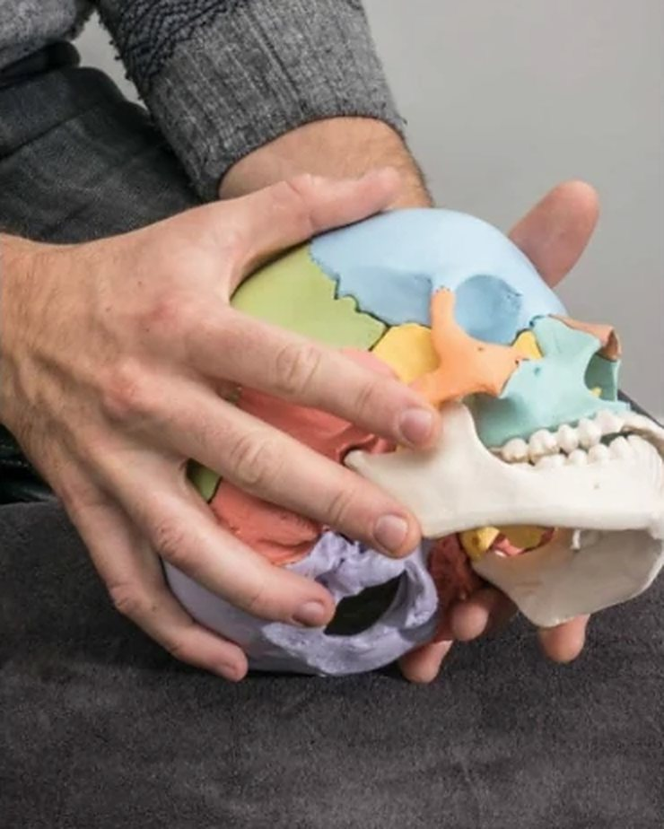

Voor huisartsen
Doorverwijzen naar de praktijk
Een deel van mijn patiënten komt via hun huisarts. Hier leest u kort waarvoor u kan doorverwijzen, wanneer ik terugverwijs en wat u van mij terugkrijgt.

Waarvoor patiënten bij mij komen
- Nekpijn, ook samen met spanningshoofdpijn of migraine
- Rugpijn: lumbago, acute blokkades, chronische lage rugpijn
- Schouder-, knie- en enkelklachten, overbelasting van spieren en pezen
- Uitstraling, sensibiliteitsstoornissen, evenwichtsstoornissen
- Functionele spijsverteringsklachten
- Baby's en kinderen: huilbaby's, reflux, plagiocephalie, voorkeurshouding
- Sporters en muzikanten met specifieke klachten
Osteopathie is voor mij een aanvulling op de medische behandeling, geen vervanging. Ik werk ook samen met kinesisten, (sport)artsen, specialisten, vroedvrouwen en podologen.
Wanneer ik terugverwijs
Zie ik iets dat eerst medisch onderzocht moet worden, dan behandel ik niet en stuur ik de patiënt terug naar u. Bijvoorbeeld bij:
- Progressieve neurologische uitval of tekenen van cauda equina
- Koorts, nachtelijke pijn of onverklaard gewichtsverlies
- Ernstig trauma of vermoeden van een fractuur
- Oncologische voorgeschiedenis met nieuwe, onverklaarde pijn
U krijgt een verslag
Voor elke patiënt die u doorverwijst, stuur ik u een persoonlijk verslag.
Overleg of doorverwijzen
Twijfelt u of een patiënt bij mij op de juiste plaats is? Bel of mail gerust, dan overleggen we even.